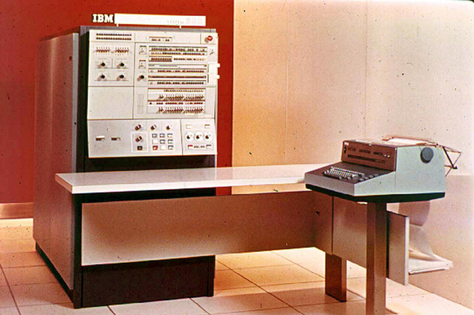
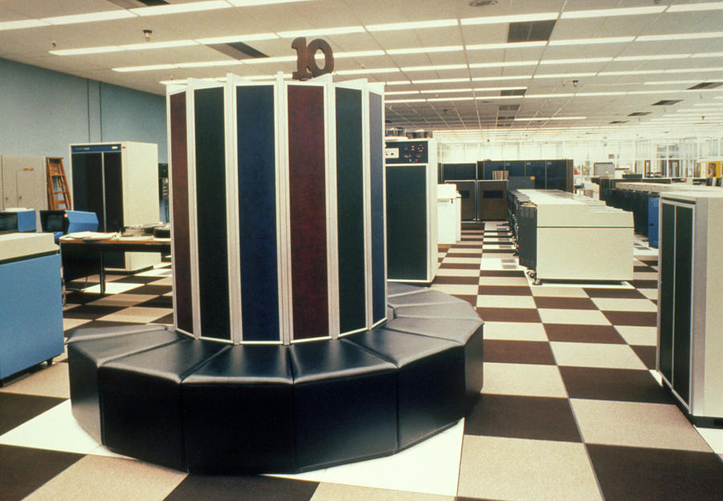

ENIAC (Electronic Numerical Integrator and Computer): Concluído em 1945, o ENIAC foi o primeiro computador eletrônico de grande escala do mundo. Ele foi desenvolvido durante a Segunda Guerra Mundial para fins de cálculos balísticos e foi um marco na transição da computação mecânica para a eletrônica.
IBM 360: Lançado em 1964, o IBM 360 foi um dos primeiros sistemas de computação empresarial em grande escala. Ele estabeleceu padrões para compatibilidade e expandibilidade, e muitos sistemas de mainframe modernos evoluíram a partir do conceito introduzido pelo IBM 360.
Apple Macintosh: Lançado em 1984, o Macintosh foi um dos primeiros computadores pessoais a apresentar uma interface gráfica de usuário (GUI) e um mouse. Ele desempenhou um papel fundamental na popularização da computação pessoal.
BM PC: O IBM Personal Computer, lançado em 1981, é frequentemente considerado o ponto de partida da revolução dos computadores pessoais. Ele ajudou a estabelecer o padrão PC, que ainda é amplamente utilizado hoje.
Cray-1: O Cray-1, lançado em 1976, foi um supercomputador líder em sua época, conhecido por seu design revolucionário e desempenho de processamento de alta velocidade. Foi um marco na computação de alta performance.
SOBRE O MUVIN
Os museus virtuais, maravilhas da era digital, oferecem uma porta de entrada para o mundo do conhecimento e da arte sem sair de casa. Nesses espaços online, os visitantes podem explorar exposições interativas, viajar no tempo através de coleções impressionantes e acessar informações valiosas sobre a cultura e a história do mundo, tudo a partir do conforto de seus dispositivos eletrônicos. Essa revolução tecnológica está tornando a cultura mais acessível e inclusiva do que nunca, proporcionando uma experiência educativa envolvente e aberta a todos, independentemente de sua localização geográfica.